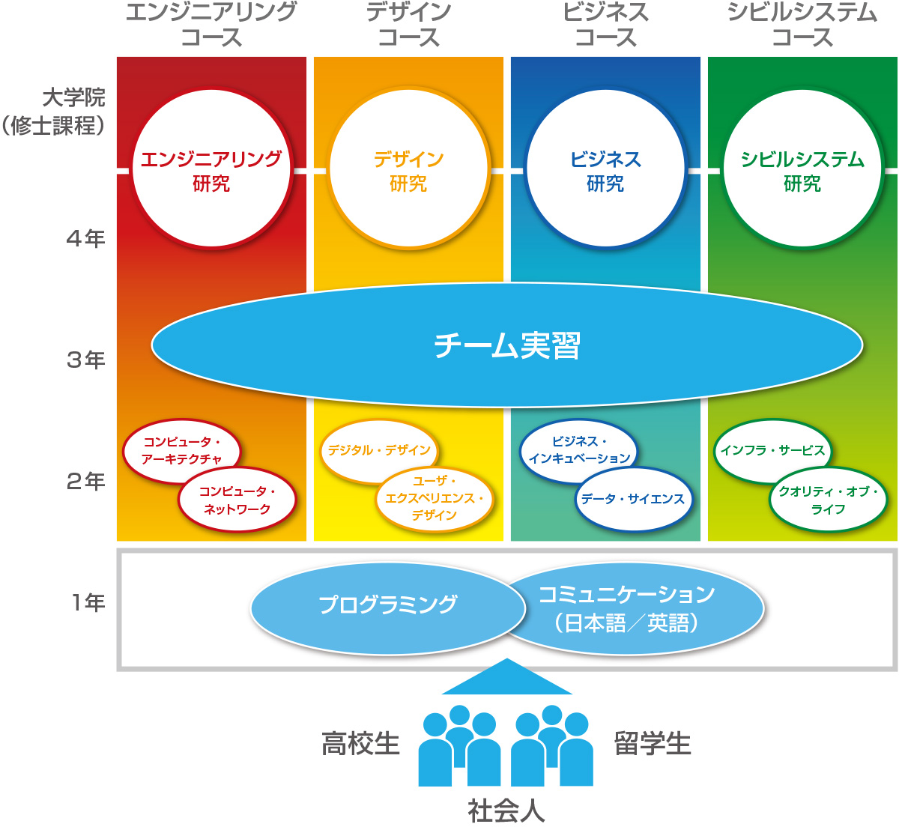

カリキュラム

１年次
すべての学生がプログラミングと日・英コミュニケーションを集中的に学び、情報連携の素地を身につける。
２年次
4つのコースに分かれ、コースごとに２つの研究分野に関する専門的な知識を身につけます。実践的な演習を通じて、情報連携のためのスキルを身につける。
３年次
コース横断のチーム実習を行う。チーム実習は情報連携の実践の場です。各コースで身につけた専門性を活かし、コース横断のチームで擬似スタートアップ型の実習を行います。コースの仲間との協働を通じて、社会での働き方を身につける。
４年次
研究室に所属し、各コースの専門性を、さらに深める。
開講予定の科目についての詳細は 情報連携学部の開講科目を参照してください。